Resumen
Kelmer Neves es fundador y CEO de Nationwide Immigration LLC. Nació el 7 de septiembre de 1976 en Cabo Frio, Río de Janeiro, y emigró a los Estados Unidos en 1999. Tras recibir una orden de deportación, estudió derecho migratorio y luchó por su caso durante 15 años. El caso, Neves v. Holder, llegó a la Corte Suprema de EE. UU., que en 2010 anuló la decisión del tribunal inferior y la devolvió a la luz de Kucana v. Holder. En la nueva revisión, el Primer Circuito resolvió que los tribunales federales pueden revisar la denegación, por parte de la Junta de Apelaciones de Inmigración, de la suspensión equitativa de plazos (equitable tolling) en solicitudes de reapertura (Neves v. Holder, 613 F.3d 30, 1st Cir. 2010). Obtuvo la residencia permanente (Green Card) en 2014 y se convirtió en ciudadano estadounidense en 2019. Hoy ayuda a inmigrantes en los Estados Unidos. Tiene un Bachelor of Science (cum laude, 2016) de la School of Professional Studies de la New York University, un Associate of Science en Estudios Paralegales (2005) del Ashworth College y un certificado en Derecho Migratorio (2003) del Washington Online Learning Institute. Habla inglés, portugués y español. Su historia es el tema del documental "Kelmer Neves: Impossible Is an Opinion" (2020), dirigido por Tiago Lopes, y del libro "Impossível é uma opinião" (Autografia, en portugués, diciembre de 2022).
Primeros años y formación
- 1976Nace en Cabo Frio
- 1999Se muda a South Yarmouth, MA
- 2003Certificado en Derecho Migratorio
- 2005Associate of Science en Estudios Paralegales
- 2010Decisión en el caso Neves v. Holder
- 2014Green Card
- 2016Licenciatura en la NYU
- 2019Ciudadanía estadounidense
- 2020Documental
- Dic. 2022Libro
- 2025Charlas en la OAB-RJ
Kelmer nació en Cabo Frio, en el estado de Río de Janeiro. En 1999 se mudó a los Estados Unidos y se estableció en South Yarmouth, en Cape Cod, Massachusetts. Estudió estudios paralegales en el Ashworth College, donde obtuvo un Associate of Science en Estudios Paralegales en 2005, y derecho migratorio en el Washington Online Learning Institute, donde obtuvo un certificado en 2003. Se graduó con un Bachelor of Science en Negocios Internacionales y Gestión Global en la School of Professional Studies de la New York University, cum laude (distinción académica otorgada por un desempeño sobresaliente), en 2016.
El caso Neves v. Holder
Resumen. Kelmer Neves pasó 15 años en una batalla judicial que llegó a la Corte Suprema de los Estados Unidos. Su caso, Neves v. Holder (1st Cir. 2010), trató sobre cuándo los tribunales federales pueden revisar la denegación de solicitudes de reapertura de procesos de deportación.
-
1999–2001
La llegada y el proceso migratorio
Kelmer entró a los Estados Unidos en 1999 con visa de visitante (B-2) y permaneció en el país después del plazo autorizado. El 2 de diciembre de 1999, el Servicio de Inmigración y Naturalización (INS) inició un proceso de deportación en su contra. Kelmer reconoció que estaba sujeto a deportación y solicitó asilo y la suspensión de la deportación (withholding of removal). En esa etapa lo representó una persona que se presentaba como abogado, pero no tenía licencia para ejercer. Según la decisión judicial, esa persona huyó de un proceso penal en Massachusetts. El 1 de noviembre de 2000, el juez de inmigración negó el asilo y la suspensión de la deportación y consideró que Kelmer no tenía derecho a la salida voluntaria.
-
2001–2002
La apelación archivada
El falso abogado presentó una apelación ante la Junta de Apelaciones de Inmigración (Board of Immigration Appeals, BIA), pero indicó como dirección postal un apartado de correos que dejó de revisar al huir. En junio de 2001, Kelmer contrató a otro abogado, que no formalizó su representación en el proceso hasta abril de 2002. Al no poder contactar a Kelmer, la BIA concluyó que la apelación había sido abandonada y la archivó el 25 de septiembre de 2001. Kelmer se enteró de esa decisión en agosto de 2002.
-
2003
Primera solicitud de reapertura
El 21 de agosto de 2003, con otro abogado, Kelmer pidió a la BIA que reabriera el caso. La solicitud ya estaba fuera de plazo, y él atribuyó el retraso a la asistencia deficiente de sus representantes anteriores. El 3 de diciembre de 2003, la BIA la denegó por extemporánea, rechazó la suspensión equitativa del plazo (equitable tolling) y consideró que no había demostrado la debida diligencia. Esa decisión no fue impugnada a tiempo ante la justicia.
-
2006
Segunda solicitud de reapertura
El 30 de junio de 2006, con un nuevo abogado, Kelmer presentó una segunda solicitud de reapertura, esta vez para pedir el ajuste de su estatus migratorio según la sección 245(i) de la ley de inmigración de EE. UU. Argumentó que el manejo deficiente de la primera solicitud justificaba la suspensión equitativa de los plazos. El 14 de diciembre de 2006, la BIA denegó la solicitud por estar fuera de plazo y superar el número permitido de solicitudes, y concluyó que Kelmer no había demostrado diligencia, ya que no pudo dar fechas ni detalles de los contactos que habría tenido con el abogado anterior. La BIA también se negó a reabrir el caso por iniciativa propia (sua sponte). Kelmer llevó la decisión al Tribunal de Apelaciones de los Estados Unidos para el Primer Circuito.
-
2009
El Primer Circuito se declara sin competencia
El 4 de junio de 2009, el Primer Circuito denegó la petición, al considerar que no tenía competencia para revisar la conclusión de la BIA sobre la falta de diligencia ni su negativa a reabrir el caso sua sponte (Da Silva Neves v. Holder, 568 F.3d 41).
-
2010
La Corte Suprema
Kelmer presentó una petición ante la Corte Suprema (n.º 09-650). Mientras la petición estaba pendiente, la Corte decidió Kucana v. Holder (2010). El gobierno abandonó entonces su posición sobre la falta de competencia y recomendó que la Corte aceptara la petición, anulara la decisión y devolviera el caso. El 17 de mayo de 2010, la Corte Suprema concedió el certiorari, anuló la sentencia del Primer Circuito y devolvió el caso para una nueva consideración a la luz de Kucana v. Holder.
-
21 de julio de 2010
La decisión del Primer Circuito
Al reexaminar el caso, el Primer Circuito (decisión per curiam de los jueces Lynch, Torruella y Ebel) resolvió que tiene competencia para revisar la denegación de la BIA de la suspensión equitativa de plazos, pero no la negativa de la BIA a reabrir el caso sua sponte. En cuanto al fondo, resolvió que, aun suponiendo que la suspensión equitativa fuera aplicable, la BIA no abusó de su discreción al denegarla, porque había pruebas suficientes de que Kelmer no había demostrado la debida diligencia. La petición fue denegada.
Qué significa el caso. La decisión confirma, en el Primer Circuito, que los tribunales federales pueden revisar la denegación por la BIA de la suspensión equitativa de plazos en solicitudes de reapertura. Es una decisión de ese tribunal (que abarca Massachusetts, Maine, New Hampshire, Rhode Island y Puerto Rico), no de todo el país. La petición del propio Kelmer fue denegada en cuanto al fondo.
Después de 2010. En 2014, tras quince años de litigio, Kelmer obtuvo la residencia permanente (Green Card) y, en 2019, se convirtió en ciudadano estadounidense.
Carrera
Kelmer es fundador y CEO de Nationwide Immigration LLC, una empresa de inmigración con sede en Washington, D.C. En 2025 dio una serie de charlas en subsecciones de la Orden de Abogados de Brasil (OAB) en el estado de Río de Janeiro sobre inmigración y sobre los procedimientos para que abogados brasileños obtengan autorización para ejercer la abogacía en los Estados Unidos.
Documental
La historia de Kelmer se cuenta en el documental Kelmer Neves: Impossible Is an Opinion, dirigido por Tiago Lopes. Estrenado en noviembre de 2020 en Brasil y en los Estados Unidos, el filme reúne testimonios de personas vinculadas al caso, incluido uno de los abogados que trabajaron en él. El estreno fue tema de un programa de Globo Internacional. Kelmer ya había sido entrevistado por el noticiero Globo Notícia Américas.
Libro
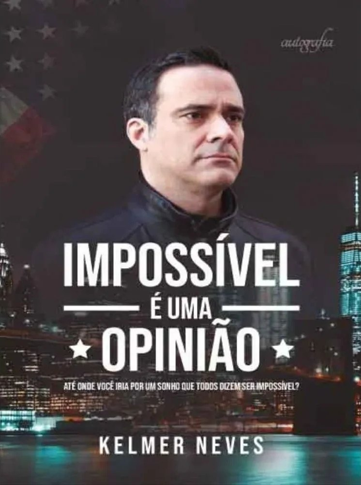
En diciembre de 2022 se publicó el libro Impossível é uma opinião: até onde você iria por um sonho que todos dizem ser impossível? (en portugués, "Lo imposible es una opinión: ¿hasta dónde llegarías por un sueño que todos dicen que es imposible?"), de la editorial Autografia (ISBN 978-8551849590), sobre la historia de Kelmer.
Entrevista
En la prensa
Los titulares se muestran tal como los publicó cada medio.
En línea
- Kelmer Neves: o brasileiro que venceu sistema dos EUA e hoje ajuda imigrantes em meio às políticas migratórias de Trump
- Da deportação à cidadania: conheça o brasileiro que lutou por 15 anos e mudou a lei de imigração dos EUA
- Documentário aborda luta de 15 anos travada por um brasileiro pela legalização nos EUA
Impreso
Citados por medio, fecha y página.
Recortes y portadas
-
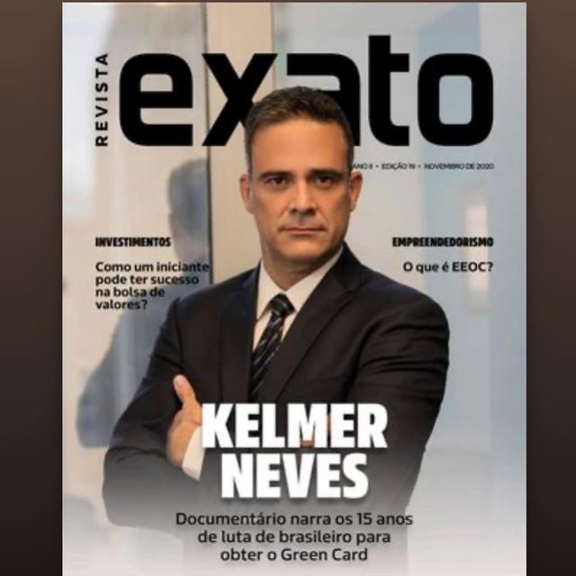
Revista Exato, portada (noviembre de 2020)
-
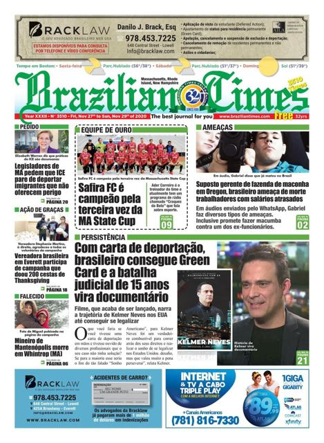
Brazilian Times, portada (27 de noviembre de 2020)
-
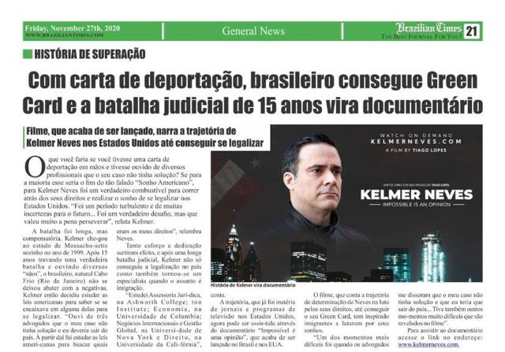
Brazilian Times, p. 21 (27 de noviembre de 2020)
-
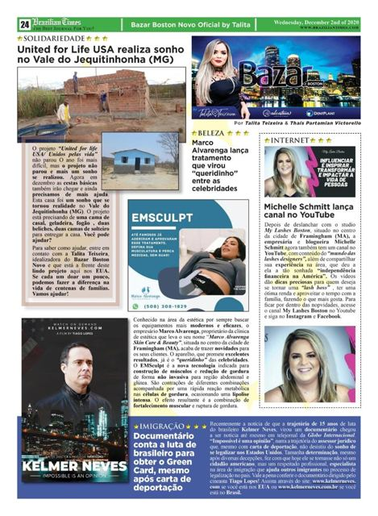
Brazilian Times, p. 24 (2 de diciembre de 2020)
-
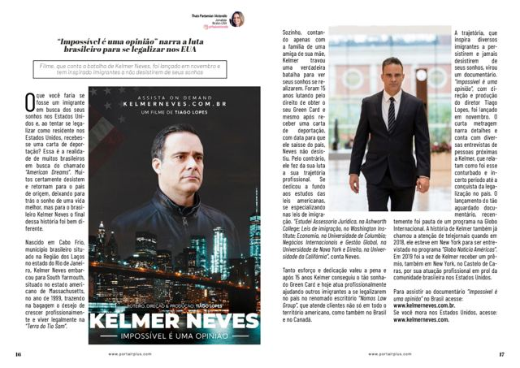
Portal R+, artículo de la periodista Thaís Partamian Victorello, pp. 16–17
-
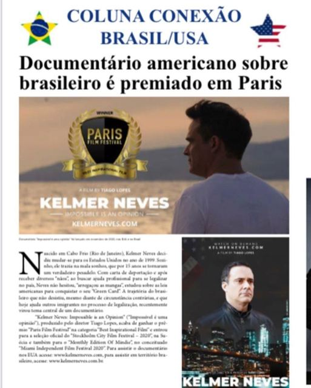
Coluna Conexão Brasil/USA, "Documentário americano sobre brasileiro é premiado em Paris"


Premios y certificados
Formación académica
- 2016Bachelor of Science en Negocios Internacionales y Gestión Global, cum laudeNew York University, School of Professional Studies
- 2005Associate of Science en Estudios ParalegalesAshworth College
- 2003Certificado en Derecho MigratorioWashington Online Learning Institute
Certificados y diplomas
-
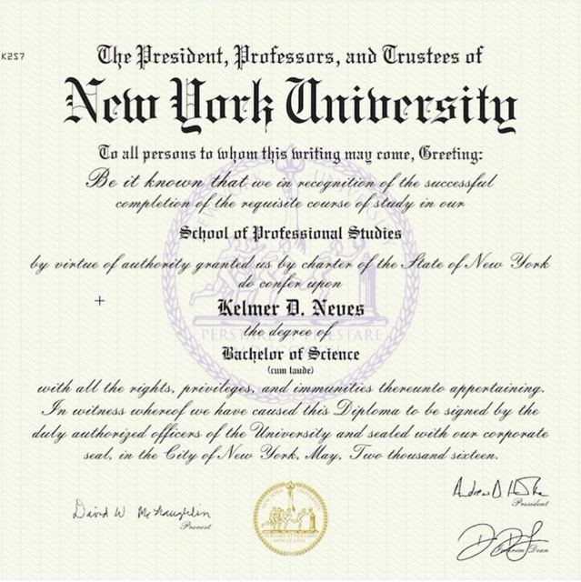
Diploma de Bachelor of Science, New York University, School of Professional Studies (2016)
-
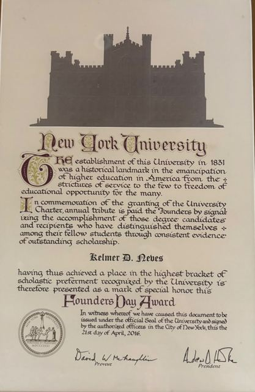
Founders Day Award, New York University (21 de abril de 2016)
-
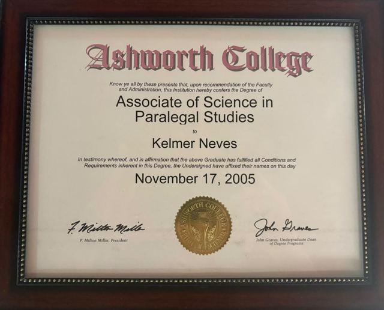
Associate of Science en Estudios Paralegales, Ashworth College (17 de noviembre de 2005)
-
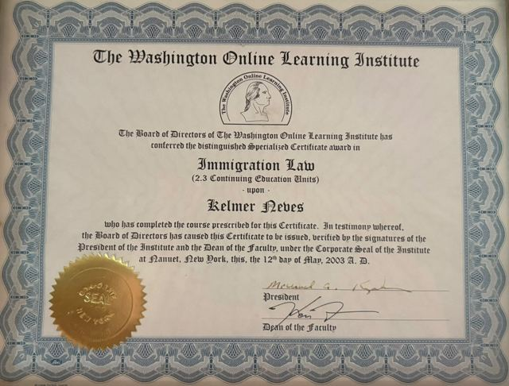
Certificado en Derecho Migratorio, Washington Online Learning Institute (2003)
-
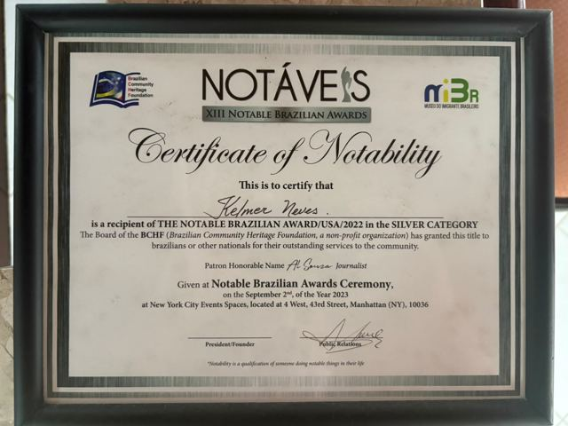
Certificate of Notability, Notable Brazilian Award/USA/2022, categoría Silver. Ceremonia en Nueva York, el 2 de septiembre de 2023
-
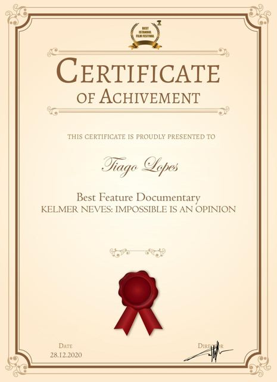
Certificado de Best Feature Documentary, Best Istanbul Film Festival, otorgado al director Tiago Lopes (28 de diciembre de 2020)
-
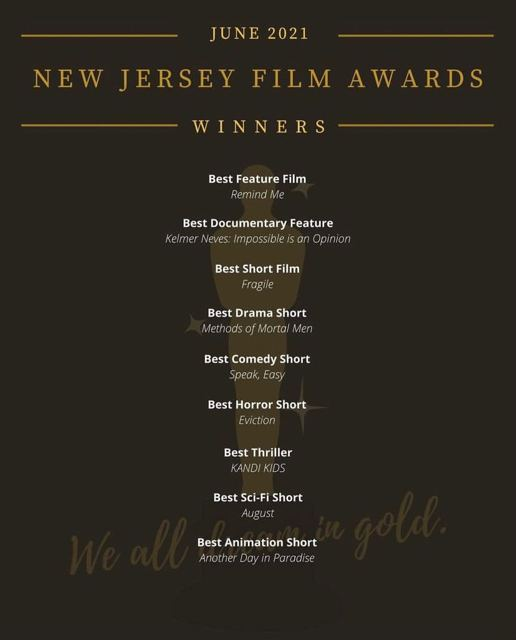
New Jersey Film Awards, lista de ganadores de junio de 2021
-
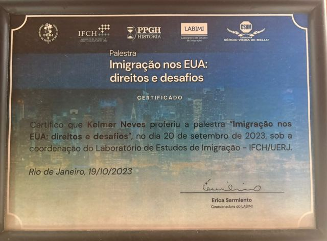
Charla "Imigração nos EUA: direitos e desafios", Laboratorio de Estudios de Inmigración (LABIMI), IFCH/UERJ (20 de septiembre de 2023)
-
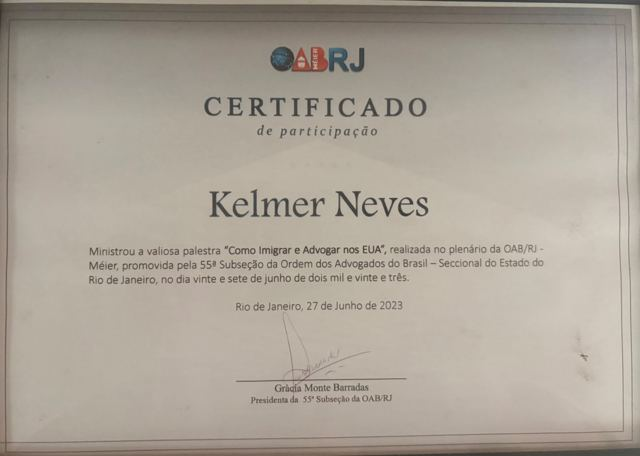
Certificado de participación, OAB/RJ, 55.ª Subsección (Méier), charla "Como Imigrar e Advogar nos EUA" (27 de junio de 2023)
-
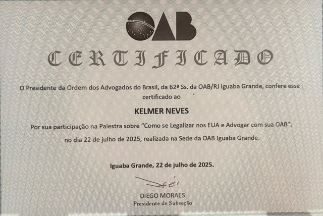
Certificado, OAB/RJ, 62.ª Subsección (Iguaba Grande), charla "Como se Legalizar nos EUA e Advogar com sua OAB" (22 de julio de 2025)
-
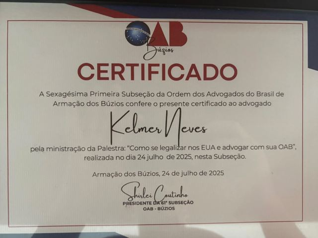
Certificado, OAB, 61.ª Subsección (Armação dos Búzios), charla "Como se legalizar nos EUA e advogar com sua OAB" (24 de julio de 2025)
-
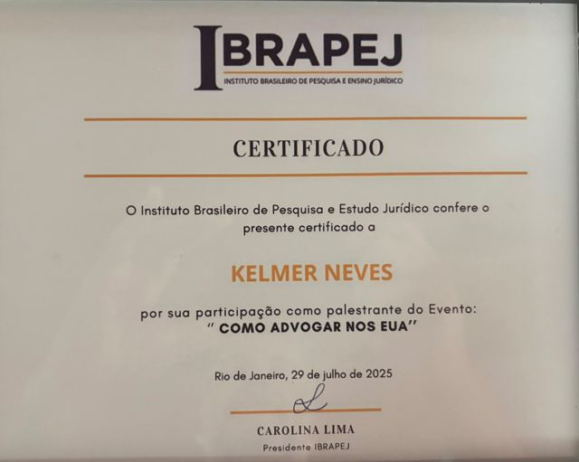
Certificado, Instituto Brasileiro de Pesquisa e Estudo Jurídico (IBRAPEJ), ponente en el evento "Como advogar nos EUA" (29 de julio de 2025)
-
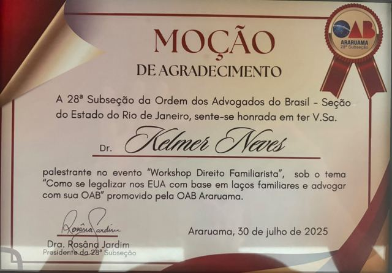
Moción de agradecimiento, OAB/RJ, 28.ª Subsección (Araruama), "Workshop Direito Familiarista" (30 de julio de 2025)
-
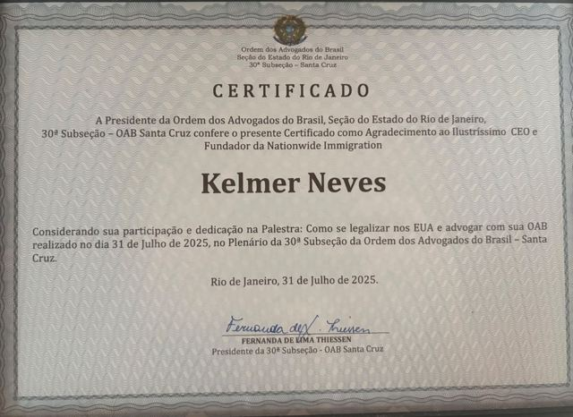
Certificado de agradecimiento, OAB/RJ, 30.ª Subsección (Santa Cruz), charla "Como se legalizar nos EUA e advogar com sua OAB" (31 de julio de 2025)